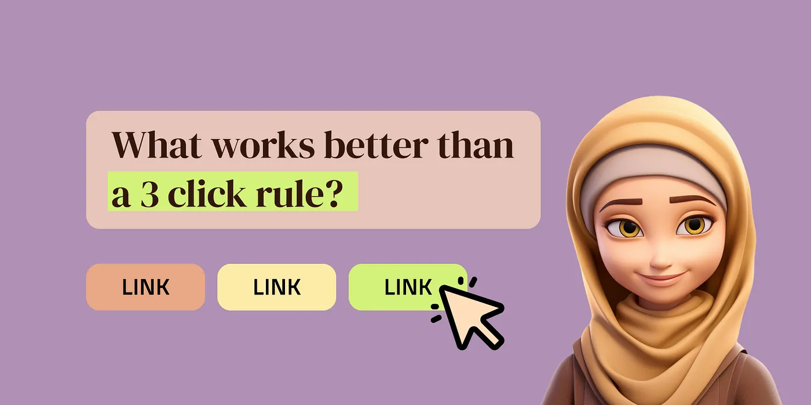
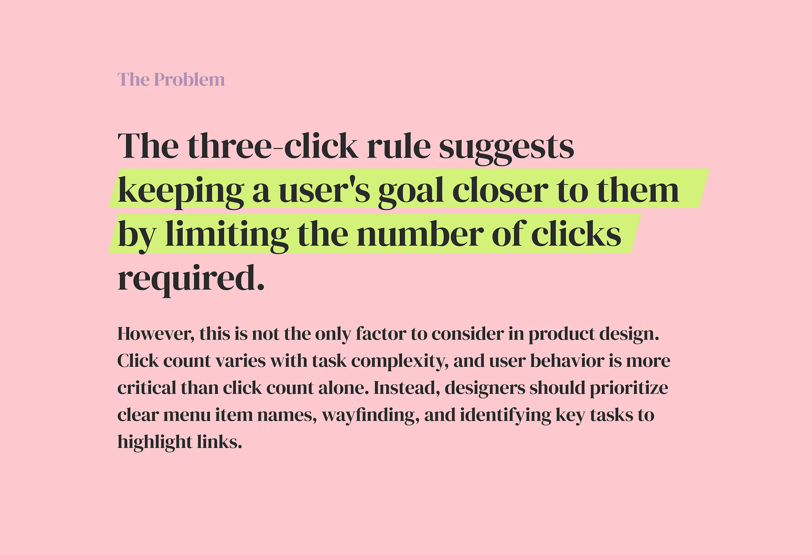
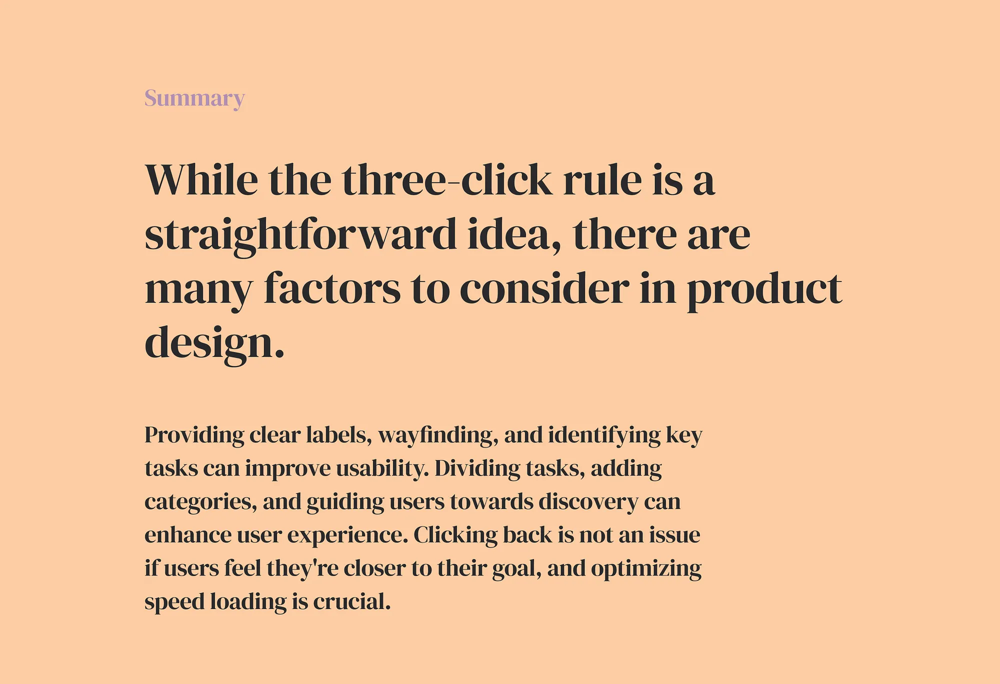
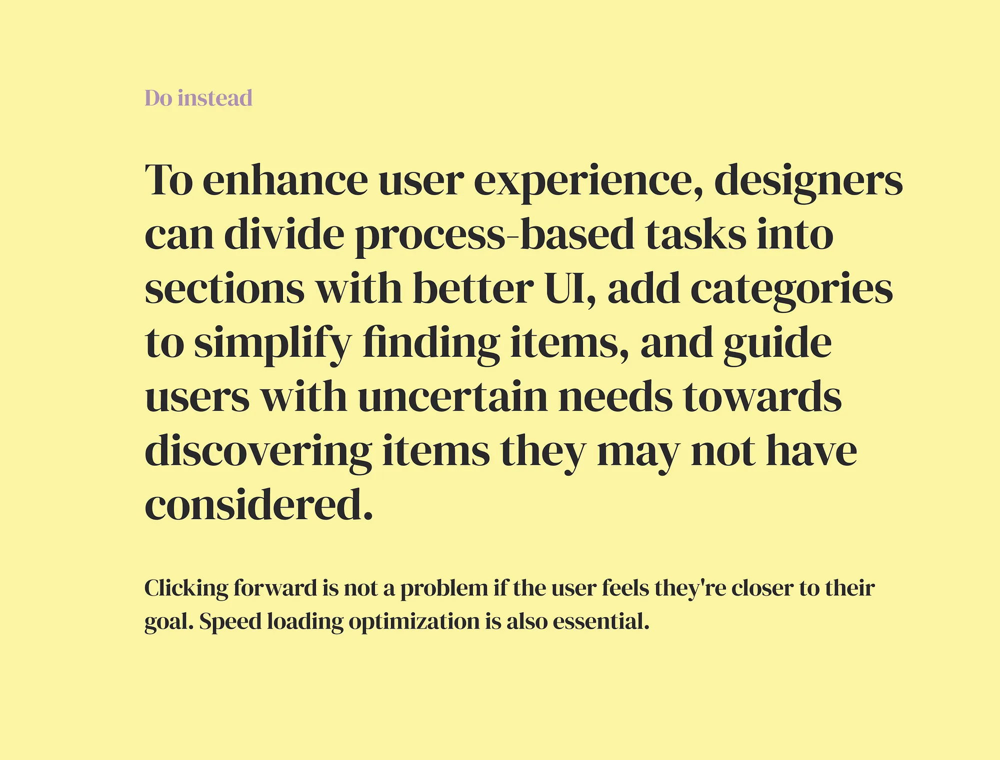

What Works Better Than a Three-Click Rule?

Introduction
One of my favorite product design podcasts is the Quick Coffee. They discussed what makes great product design in the episode “5 principles of product design”. One of the principles was the “3 click rule”. The idea is simple: Keep a goal closer to the user, so they don’t have to do more than three clicks.
After research on that topic I found alternative ideas to that.
Normal Nielsen on three clicks rule:
-
Click count varies with task complexity, no fixed number.
-
Some clicks may make you wait longer if a page or a content is loading.
-
Click count doesn’t indicate usability; user behavior matters more. Counting clicks alone doesn’t measure user experience accurately. That idea wasn’t supported by research data.
What to do instead, according to Nielsen:
-
Use clear names for menu items. Avoid vague terms.
-
Use wayfinding to show where users are in the website: breadcrumbs, local subnavigation.
-
Use mega menus instead of multilevel dropdowns for better usability. Mega menus show multiple levels for easy pathway comparison.
-
Identify key tasks and highlight links on homepage and elsewhere.
-
Provide clear landing pages with groups of links and images for unfamiliar terms. They provide stopping places and easy lateral movement. Remember, higher levels are general categories and deeper ones are specific. Landing pages help navigate pathways with multiple steps and ensure efficient user interaction.
-
Ensure fast page load times for new pages resulting from clicks. 3 clicks that each have a long load time lead to a worse experience than 5 clicks that quickly load.
IEEE Brande Experience on that:
-
Create a task path that feels progressive and intuitive, so users feel they are getting closer to the content they are seeking
-
Use clear labels on links, buttons, and error messages. Tell users where they are instead of leaving them to guess.
-
Improve site search accuracy and relevance if provided to users.
-
Optimize speed loading.
Designer Kaitlyn Stahl:
Here are a few instances where UX can be enhanced: By dividing a process-based task into several sections, each with a better UI, rather than one long section with an inferior UI. Adding categories to an online store may increase clicks from 3 to 4, but it can also make it simpler for users to find exactly what they want, resulting in more sales.
Users with uncertain needs can benefit, as seen in Amazon’s browsing design. The site’s layout can guide users towards discovering items they may not have previously considered, leading to increased satisfaction and ultimately more purchases. Users don’t always know exactly what they want, but with thoughtful design, they can be led to find what they need.
“Hey, now I’m looking at departments! Now I’m looking at Home and Garden! Now I’m looking at outdoor stuff! Oh, I do need shears!” — the user is going to be satisfied.”
We often settle for the first option that makes sense. Clicking forward isn’t a problem if the user feels they’re getting closer to their goal!
  